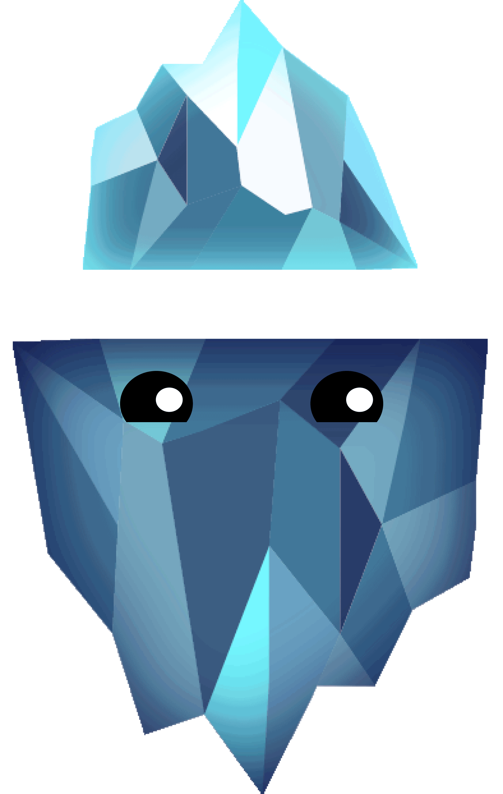
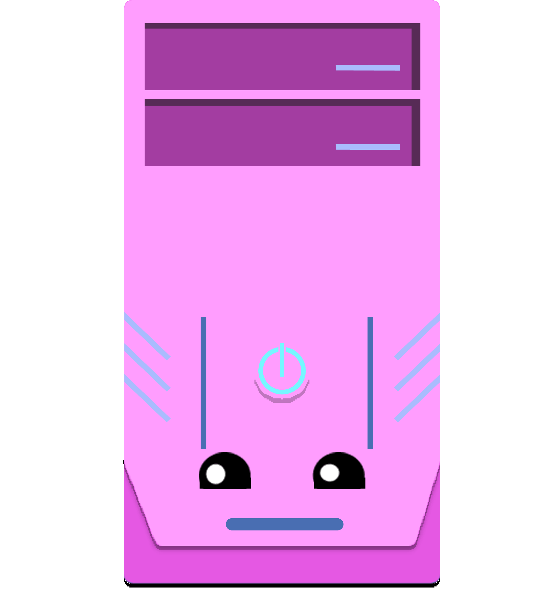
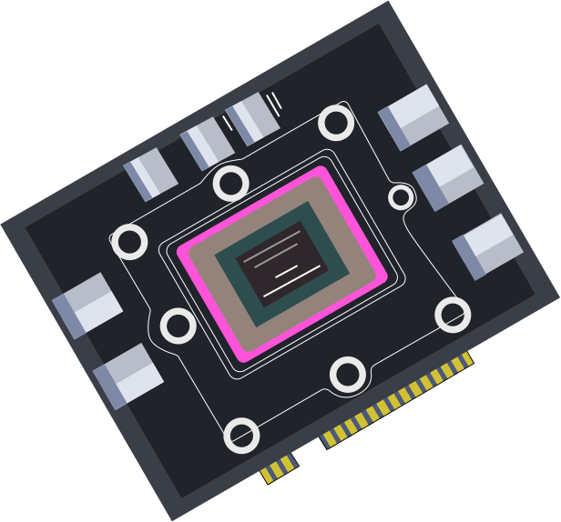
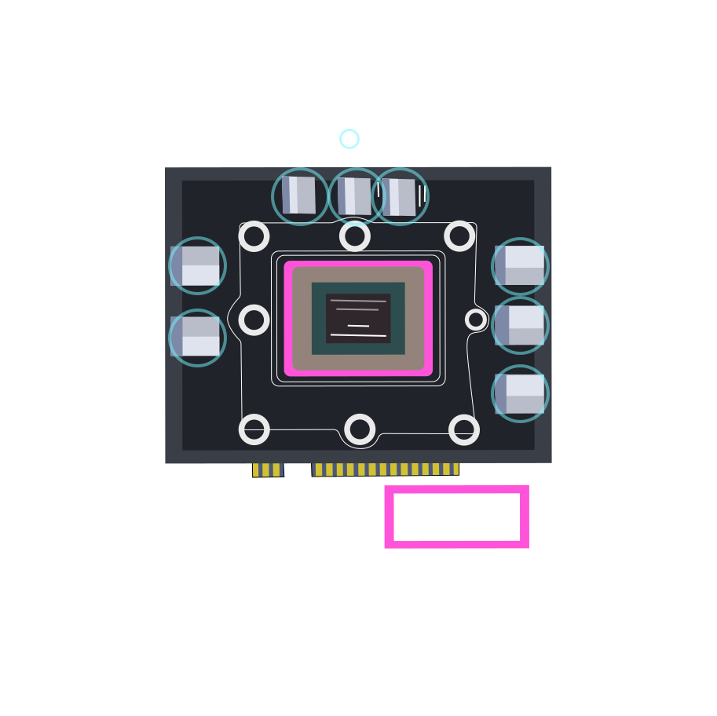
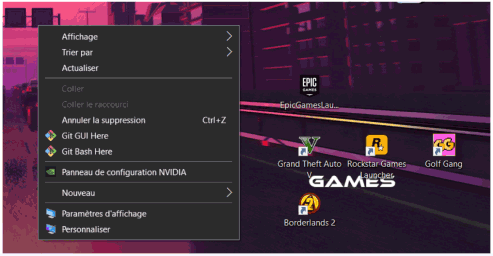

Le gain d’XP des joueurs pc
Dans le cadre de mon travail de fin d’année, je vous transmets ici l’expérience que tout joueurs PC vit et gagnera.
Échange, écoute et Séléction
Le lancement de ce projet de départ consistait à promouvoir la culture geek que ça soit par une ASBL sur des jeux-vidéo ou simplement aller à la rencontre des joueurs. J’ai trouvé la deuxième idée intéressante car, je ne vous invente rien, ce sont les joueurs qui sont le plus concernés par les jeux vidéo. Le sujet m’intéresse beaucoup car tout le monde y trouve son lot de divertissement.

Cela me permet de ramener à la surface certains points nuisibles que les joueurs rencontrent bien souvent, mais qui sont bien souvent minimisés voire banalisés par ce moment de loisir.
Zone de départ
Interraction
Mon idée originelle partait du fait que je voulais simplement comprendre l'expérience des joueurs. Ma mission était maintenant d’aller voir des ASBL et des salles de jeux vidéo comme Gamestate où les gens se retrouvent pour jouer afin que je leur propose de répondre à mes questions.

J’ai rencontré des joueurs grâce à des applications de messagerie gratuites, sur des plateformes de streaming et aussi lors d'un évènement consacrés aux jeux vidéo.
interviews
Lors de mes rencontres, que ça soit en face à face ou bien à distance, elles étaient absolument toutes formidable sans exception !
Leur yeux pétillaient de passions pour les jeux vidéo et leur envie de mettre en avant un domaine qui est tout le temps critiqué, les motivaient. Je ne sais pas si c’est le costume de mouton que je portais qui les enchantait mais il était clair qu’ils étaient tout le temps bienveillants et souriant.
Je leur ai fait part d’un formulaire qui les invite à partager leurs expériences, en passant d’abord par leur toute première console à leur moment d’ennuis.
Bien que certains ont commencé avec une Commodore 64 ou une Nintendo NES, la grande majorité jouent maintenant sur PC.
Déceler les obstacles
Après les échanges que j'ai pu avoir, j'ai constaté plusieurs choses.
Il est vrai que certains jeux sont répétitifs, que dans les jeux multijoueurs il y a souvent des méchants joueurs qui insultent un autre en lui disant « t’es nul ! » car il n’a pas su répondre aux attentes de son équipier.
Mais ces soucis sont dans un contexte où le joueur se retrouve embêté de rencontrer de temps en temps des joueurs qui sont salé, ce qui veut tout simplement désigner une personne qui est remplie de haine à en boire ses larmes salées.
Seulement la frustration première pour un joueur et la plus courantes est d’avoir PC qui subit le jeu aulieu de l'accepter tel qu'il est.
En effet, à 90% des cas, le PC rencontrera des problèmes du à une mauvaise configuration. Entraînant des problèmes de textures, de temps de chargement, de crash du jeu en question. Cela révèlerait un gros problème venant de son ordinateur mais aussi un coté frustrant pour les joueurs.
Condition des joueurs
C’est le problème que beaucoup trop de joueurs rencontrent en ce moment même. Ils se plaignent d’avoir des bugs de textures comme de la distorsion et des disparitions d’éléments ainsi que des chutes de FPS (frames par seconde) lorsqu’ils jouent. Ils n'ont pas de pertes de connexion ce qui est bon à savoir. C’est probablement dû à un manque des ressources venant de la carte graphique mais il n’empêche que l’expérience que les joueurs rencontre à ce moment là, est bien plus qu’ennuyante.
Éclairage stratégique
Mon hypothèse principale viendrait du fait que la configuration du PC n’est pas adapté aux jeux. La technologie progresse rapidement et donc les demandes de ressources deviennent plus abondantes. Elle se veut beaucoup plus immersive d’où le fait que la 3D à évolué très vite pour permettre de créer des mondes plus vrais que nature dans les jeux vidéo. Mais alors, comment savoir à l’avance si le PC peut supporter le jeu avant de procéder à l’achat ?
C'est pas Internet ?
Je me demande ce qui ralentit le jeu.
La VRAM (Video Random Access Memory, la mémoire vidéo dédiée). De manière simple, il s’agit de la mémoire dédiée au GPU (la carte graphique) ; c’est donc l’équivalent de la RAM avec le CPU (le processeur: utile pour le fonctionnement des programmes et un affichage correcte).
 Seulement la VRAM vient stocker momentanément les données reçues directement par le jeu et les retire après son utilisation. La VRAM garde en mémoire certaines données, comme les lourdes ressources graphiques afin de les charger bien plus rapidement et dans un ordre bien précis. Son plus grand inconvénient est qu’elle ne peut pas être augmentée comme la RAM étant donnée qu'elle fait partie de la carte graphique, elle est soudée.
En résumé, si la mémoire du GPU est insuffisante pour jouer, les joueurs feront alors face à certains problèmes de performances.
Combien de VRAM ?
La manière la plus simple serait de faire un clic droit sur l’arrière-plan du bureau et d’accéder aux paramètres d’affichage.
Ensuite, dans les «paramètres d’affichages avancés» puis dans «propriétés de la carte vidéo». Ici on y retrouve donc 8.235Go en mémoire graphique.
L’utilisation de la VRAM dépend du jeu.
Ma solution est d'aider les joueurs à comprendre l'art de jouer avec un faible pourcentage de bug.
Les résultats de mes interviews montrent bien qu’ils sont frustrés vu le nombre de ralentissement de chargement.
Ce qui m'amène à vouloir les guider afin qu'ils puissent anticiper cette désastreuse situation avant leur achat d'ordinateur, mais aussi pour qu'ils puissent prendre connaissance des jeux qui seraient adaptés à leur configuration. Ce n’est pas magique, c’est juste le fait de bien comprendre ses performances.
Le tutoriel pour savoir combien de VRAM on a, montre que que ma VRAM peut aller jusqu’à 8Go de mémoire graphique.
Voix du héros
L’important c’est qu’ils comprennent que la VRAM est comme une usine qui stockent des informations de manière momentanée et la supprime lorsque la ressource n’est plus présente.
Comme lorsqu’on découvre une map sur un jeu, après le temps de chargement, la mémoire VRAM devient plus légère car elle ne doit plus générer ses données.
Pour garantir une bonne compréhension de mes spectateurs, il serait plus simple de rester dans une prise de parole objectives en évitant l’humour forcé et en restant moi-même.
Pour éviter de les perdre dans mes explications techniques, je limite les informations trop technique pour maintenir leur attention.
Boss final
Après avoir examiné tous les aspects de ce problème, on pourrait aussi dire que la plupart des aides conseillent de mettre tous les jeux en basse résolution pour y jouer. Bien que je respecte cette idée, je ne vois pas pourquoi on achèterait un jeu d’actualité pour se retrouver avec deux pixels qui se battent.
Ce qui est évident c'est qu'un PC peut lancer des jeux mais pas n'importe lesquels.
C’est pourquoi je suggère que la seule et meilleure solution pour tous serait que les joueurs comprennent pourquoi ils ont tant de mal à jouer à certains jeux.
L'idée est de leur garantir une expérience incroyable dans leur moment de loisir préféré après tout.
Je suis bien consciente que ça ne leur règlera pas leur soucis de manière instantanée, mais c'est ainsi que tout le monde pourra garantir sur le long terme, un bon choix de configuration, et apaiser leurs esprits.